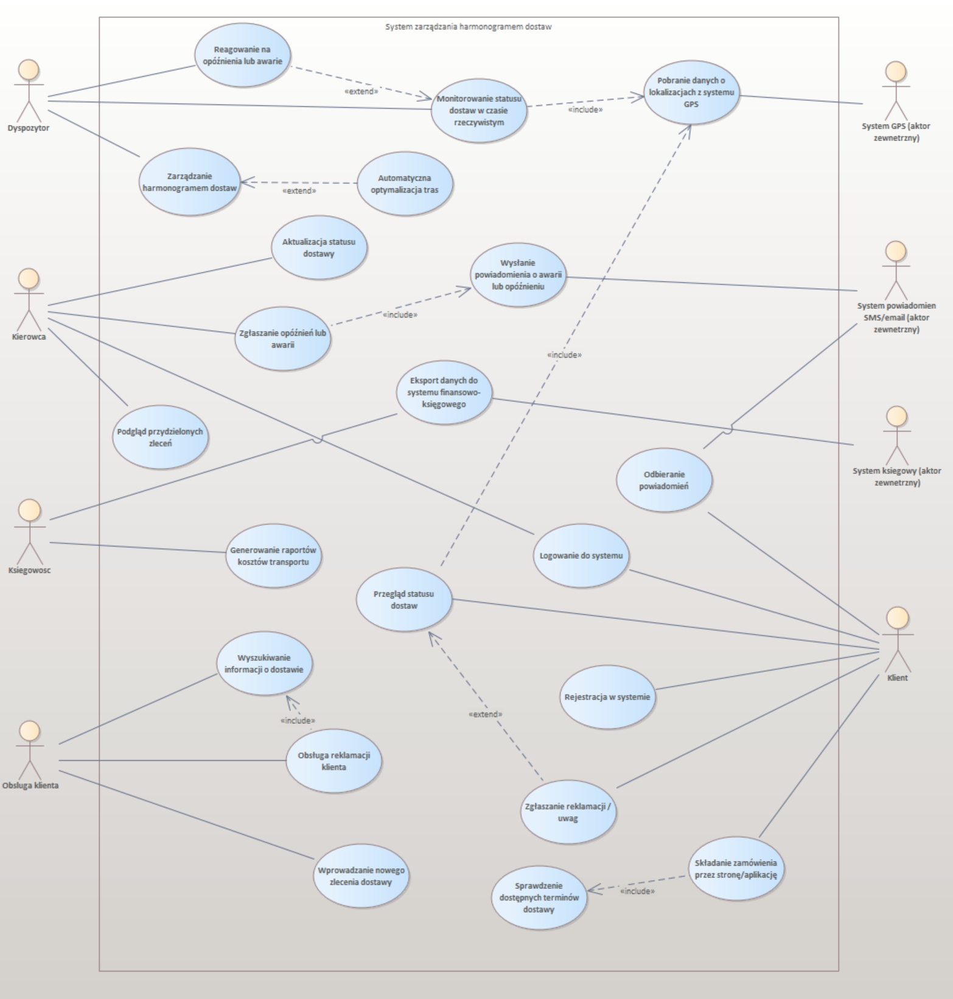
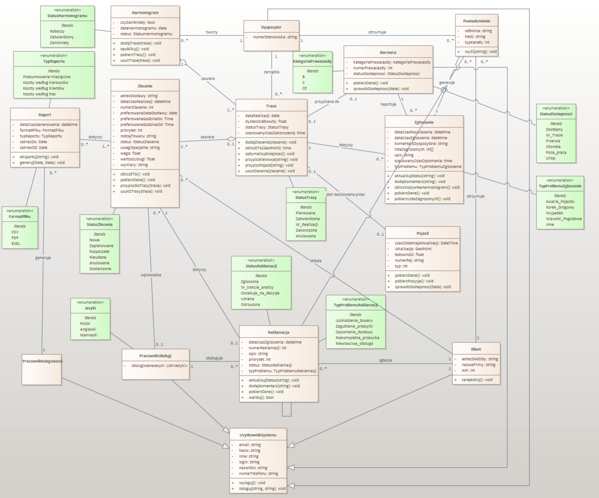
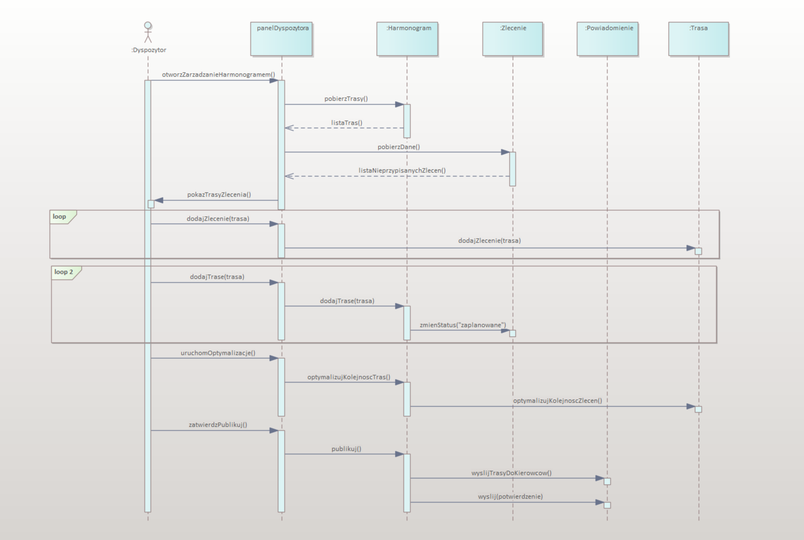
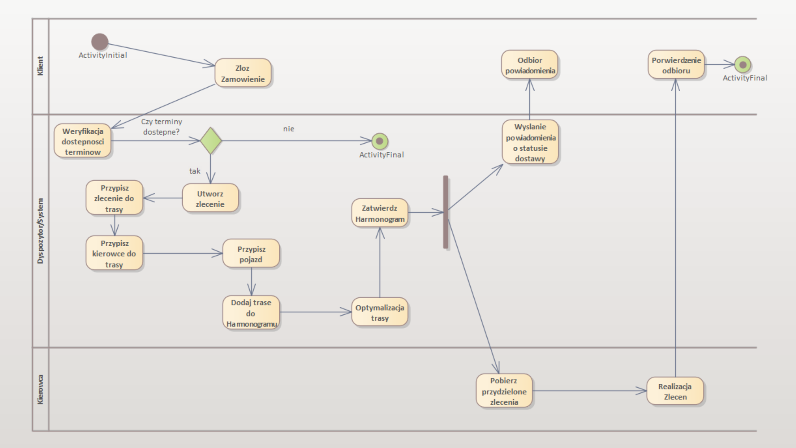

Delivery Schedule Management System
A software-engineering course project focused on system design rather than implementation. The work covered vision, requirements, use cases, object modeling, and dynamic UML diagrams for a fictional logistics company.
Problem Context
Phoenix Sp. z o.o. manages deliveries in the Pomeranian region with about 80 clients per month, 20 vehicles, and 15 drivers. Schedules were created manually in spreadsheets, creating dispatch overhead, limited visibility, and weak customer self-service.
Stakeholders and constraints
Organization context, users, external systems, functional requirements, quality attributes, and MoSCoW priorities.
Operational flows
Use-case diagram plus structured descriptions with alternatives, exceptions, preconditions, and postconditions.
Behavior diagrams
Sequence, communication, activity, and state diagrams modeled in Enterprise Architect.
Users
| Actor | Primary need | Design implication |
|---|---|---|
| Dispatcher | Create schedules, optimize routes, monitor delivery status. | Dense planning interface with real-time exceptions. |
| Driver | See assigned route and update delivery status. | Mobile UI with large controls and low cognitive load. |
| Customer | Order deliveries, check slots, track status, file complaints. | Web portal with self-service flows and notifications. |
| Accounting | Export delivery and cost data. | CSV integration with the financial/accounting system. |
Artifacts



